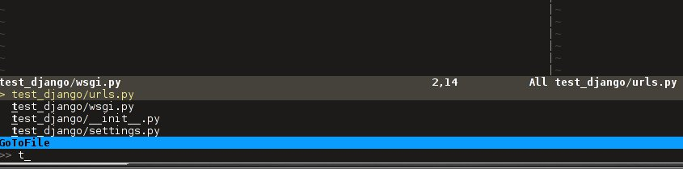

Vim as your IDE
Tweetin programming · Thu 08 November 2012
in programming · Thu 08 November 2012
To follow this article the reader should at least have a basic idea of how to use Vim and its command modes. Or if you are new to Vim, you can read my first blog to know how I came in to Vim and its fundamental differences with other editors.
Here I'm trying to explain how to make the Vim more productive by adding some extra features through Vim plugins. After this setup the Vim would have most of the features that a modern IDE offers. I'm a python developer so this Vim setup is a little inclined to python side. But I'm including general plugins only to make it suitable for most of the programming languages.
The installation and configuration setups are being described at the end, if you want to take a look at it, go here Setup Vim from Scratch.
Update on Dec-18-2017
The plugin and vim environment got new changes. I captured it on a separate blog (https://haridas.in/vim-upgrade-2017.html). Please follow new blog entry now on.
Support for vim environment specified in this blog entry is deprecated now.
The basic Vim or Vi installation comes with most of the Gnu/Linux machines are more than enough for good productive works. And Vim has plugin structure, so we can extend the Vim through plugins. The plugins further improve the productivity and reduces lot of key strokes.
The Gnu/Linux's Console or Terminal based Vim has some limitation to show good fonts and colors. So you have to install GTK version of the Vim(Gvim). Gvim gives you all the good looking features to your Vim. Just take a look at my Konsole and GTK Vim screen shots.


Here is the list of plugins that I have been configured on my Vim. It includes good color theme also. All of this Vim setup are there on my Github project. Towards the end I described how to make use of my Github project to get all of this features on your Vim. Before that first understand the functionalities and use case of different plugins and then we can go to the installation step.
UPDATE (16/June/2013):-
After using GVIM for a while, I came back to the Konsole itself since it's more convenient for me. But one problem with terminal is that it only support only 256 colors. But don't need to worry actually it's more than enough. On the command mode of the vim run this command to enable 256 colors - ":set t_Co=256". Actually this special setting is not required for the default themes, but if we are using new themes with more colors and font settings then those themes may not work properly on the terminal mode. So this settings will make sure that it will work even though it will degrade the features gracefully. My .vimrc has been updated with these changes so you will get it from github.
A Side Note
In my .vimrc file, I disabled the use of arrow keys in the Vim command mode. That was forced me to learn the Vim classic hjkl arrow keys, it really worked for me. Now I don't required the key board arrow keys any more even in Vim editing mode.
If you want to change this behaviour, just remove below sections from my .vimrc file.

Similarly, you can just go through my .vimrc file to see other options, I tried to document my .vimrc file as much as possible. You can play around with it to make it suitable for you.
This is like Tabs on other IDE's. We can see the opened files on vim using this plugin. By default, we have to use :ls to see opened buffers. So this plugin makes it very convenient to view the opened files as a tabs.
Vim has slightly different concept about the Tabs compared to other IDE's. Vim has support for tabs by default. That tab is different from the normal IDE's Tab. Actually the difference is that the vim tabs are a collection of opened buffers(or files.). So we can consider it as a group of tabs in other IDE context.
But most of the time we only requires one vim tab and set of opened buffers(files.). The MinibuferExplorar will help you to see those opened buffers as a virtual tabs. See the screen shot below.

You can use CTRL + h/j/k/l or CTRL + w to navigate around the different split windows and the mini buffer Explorer. To open a hidden buffer on a vertical split window, just go to the MinibuferExplorer and pick a file buffer(You can use normal hj keys to move horizontally on MiniBufferExplorer) then press v. Or Press s to open the buffer or file on a horizontal split window.
Back to Topics
Very awesome plugin for Vim. Which help us to search files very quickly. To get better speed it was implemented in C. To install this plugin you need one extra compilation of this plugin because of C code. Don't worry I explained this in the setup section.
Once we have enabled this plugin you can see the search list using your <leader> + t. I'm using my leader key as , (Comma), so for me the command will looks like ,t (comma + t). Normally the leader key is "\" on your default Vim comes with your Distro. You can change this setting in .vimrc file.
Actually the leader key provides a extension to use all the keys in the keyboard as your own shortcuts. This leader key is activated in the normal mode of the vim.
Command-t only list all opened buffers by typing ,b in normal mode. It's very useful if we opened lot of files on your Vim.
Back to Topics
Another very useful plugin for all programming languages. This plugin will help you to keep the syntax of a program correct -- like auto correct in other IDE's. This package is a general one so we can expand it very easily by support for new languages. By default it supports lot of programming languages. So this plugin is a must one for Vim.
For example, if you are editing a RST file (All my blog posts are in reStructured Text format) and you made some syntax errors in it and then you saved it, after the save operation the Syntastic Plugin will check for any syntax errors on your file automatically and show you the location of the error and its reason very neatly.
Take a look at a portion of the rst file of this blog post. I made a syntax error in the image tag,

Similarly Synstastic will help you to follow the standard coding methods defined by different programming communities. For eg; Python code has PEP8 standard, so while writing the python code, if we are not following it, Synstastic will show you the errors. After a while you would learn the PEP8 standard without any extra work :).
Back to Topics
A simple way to avoid typing some repetitive sequence of codes. For example, in python, we initialize a class by typing class keyword, name, etc... Instead of doing all those drama, we can just populate the default set of class structure from snipmate by typing cl <tab>. Try out it by opening a python test file.
The Snimpate plugin provide a lot of such shortcuts for different programming languages. We can also define our own snippets. For web developers it would be very easy if we have snippets for <table>, <div> tag completions. By default Snipmate does have support for different html tags. Please check the snippets folder(~/.vim/bundle/snippets/) to see all available snippets for a particular language or markup.
More examples;
vim test.py
#!/bin/python
cl
After typing cl press tab and see the magic of full class structure. Similarly you can define your own snippets. For eg; for <tab> to expand the for statement of your language.
Back to Topics
This plugin is for git repository management inside Vim itself. It provides set of short commands, that we can directly use in the Vim command mode to see and do the git related operations. We don't need to go outside the editing environment to manage those stuffs.
Also it have very nice git diff view inside vim itself, it is very nice to use.
To see all available git commands under this plugin just type :G<tab>, Provided the current path is under git.
Back to Topics
This will display your project directory structure in tree format. It provides lot of shortcuts to navigate through the source tree easily. It is an another common Plugin required for an IDE. Check the below image to see how it looks like.
Shortcuts - I mapped the following keys in .vimrc file to show and hide the Nerdtree when ever required. You can re-map this to your own choice.

To open and close the Nerdtree press CTRL + n. Also you can see other available commands for this plugin by typing, ESC + :NERD <tab>
Back to Topics
This plugin is only to comment out multi line code blocks together. In normal vim there is no such thing(Update), so if we want to comment multiple lines we have to go through each lines.
This plugin makes it handy, so you only need to select the code block using mouse or keyboard (Vim visual mode) and type the following commands to comment it out or uncomment.
Comment entire selected code block : <leader>cc,
Toggle the commented state : <leader>c<space>
Update: Please see the comments of this post, there is a way to comment out multiple lines in the default Vim itself, But it's not a programming language dependent.
Back to Topics
Rope is a special Plugin for Python project navigation. Most of the IDE's have similar feature to see the definition of a function or class by clicking on it or via some shortcut keys.
By default, if we open a Python project in Vim it won't have support for this feature. When we trying to use this feature first time, the Rope will prompt you to create a Ropeproject under current directory. And keep the configurations specific to Rope Project in ./.ropeproject folder under current directory.
The Plugin helps us to create the settings easily, after that we can use this plugin to view definition of all functions or classes comes under the rope project path.
In my Vim I mapped the <leader>j to :RopeGotoDefinition. For eg.
import os
import sys
Keep your cursor on top of the os and press the <leader>j or type :RopeGotoDefinition, Vim will take you into the os file from the system path Similarly we can go to definitions of any python entity comes under the Rope path settings. You can update the Rope settings for this python project from ./.ropeproject/config.py file.
This plugin also required for the modern IDE feature list. :)
Back to Topics
This plugin is similar to the NerdTree, but instead of listing project directory structure it list the objects and functions names inside a file. Like Class browser in other IDE's.

I mapped <leader>l to open tagbar and same combination to close it also.
Back to Topics
This is a simple plugin to auto complete single quote, double quote, parentheses. This is a very handy to save few key press.
Back to Topics
This section is to discus about already existing awesome features build in with the Vim. You can consider me as a beginner in this area :). If you are looking for learning more advanced details of the Vim editor, you don't need to search on google, you can find it out under its documentation itself.
To see all documentation type ESC + :help. The documentation is very huge, so Vim provides search option across all its documentation. To see a documentation about a topic, type ESC + :help <topic>
For eg;
To see about the documentation of jumps , type : ESC + :help jumps
I wrote above example, because it is an another interesting feature required for modern IDE. The thing is that it was already build in with Vim.
Jump List
I found this feature accidentally. It is to jump across different files and the same time it have an option for jump back through all the files that we came across.
To understand this feature - If we used Rope plugin to see definition of a function outside the current file, it will open a new buffer in Vim and it take you to that file. What if we want to come back to the same location of previous file ?. This requires jump back operation. Press CTRL + o, you can see the magic. Press CTRL + <tab> to go forward again.
There is much more things are there about jumplist, Vim internally keeps the list of our locations across different files. you can see that by typing :jumps. Different instances of the Vim will share the same jump list.
Similar to this, lot of things are out there to learn. This Others section is not going to end here :). But for now I'm stopping here.
So the explanation of Vim feature is over now, lets take a look at how to setup the Vim to get all these above features and make Vim ready to extend with new plugins.
Back to Topics
All required packages are there in my Vim github project. I put all those settings and plugins in standard way. So you can extend or remove them when ever required.
Before doing this, please take a backup of your current Vim settings from your home directory.
We can start the installation by picking my Git Repository,
$git clone git://github.com/haridas/Dotfiles.git
$cd Dotfiles
I kept all the required plugins as git submodules. So we will get the new changes from the plugin projects by updating the submodule project. While cloning my main repo, it won't retrieve the submodules or external plugin git projects. But we have all the settings and paths in my git projects itself. So we can easily fetch the current stable code from all the external projects. To do that, type below commands inside your Dotfiles folder.
$pwd
<path to gitproject>/Dotfiles
$git submodule init
$git submodule update
Now you have all the files required to get start with Vim, Next thing is to link my git files as your vim files. To do that just create soft link of the Vim system files and then point it to my git repository files. Here is the steps.
$cd
$ln -s <path-to>Dotfiles/vim-files/vim .vim
$ln -s <path-to>Dotfiles/vim-files/vim/vimrc .vimrc
Thats it, now open your vim, you can see all the features described above are being available, except command-t. Because it requires a compilation. The compilation step is very simple. Follow me,
$ cd <path-to>Dotfiles/vim-files/vim/bundle/command-t/ruby/command-t
$ ruby extconf.rb
$ make
The make will succeed only when you have gcc installed , and your Vim has ruby support. To check the ruby support, open your vim and type,
:ruby 1
If there is no error then you have ruby support with your vim. The latest version of Vim has support for major dynamic languages like Python, Ruby and others. So that it won't give you any head ache.
If the dynamic language support is not there with your Vim, then you have to install complete vim from your package manager.
If you are using Debian based system you can follow this command. Other platforms has also the same option using their package manager tool.
$apt-cache search python | grep vim
$apt-cache search ruby | grep vim
From the list install any of the GUI based package.
Syntastic
If you are seeing the syntax highlighter is not catching the errors on your program then it means, the required syntax checkers aren't installed. Please check this link and find the corresponding syntax checkers to be installed on your machine.
eg; For python, you have to install "pyflakes" ("pip install pyflakes")
Read the FAQ section of the syntastic doc - [FAQ Link]
Check all the supported parsers by the syntastic - [Syntax Checkers]
If you are setting this up on a freshly installed machine then you have to install ruby-dev package from your package manager.
Back to Topics
In normal mode
==============
:23,30m200 -- Move a section of code to another line.
df, (reverse dF,) -- Delete all characters till , on the current line.
I -- Go to beginning of the line as insert mode.
$ -- In command mode, go to end of the line.
gg -- Go to beginning of the file
G -- Go to end of the file.
CTRL + o, CTRL + i -- Jumps back and forward, very useful.
CTRL + h/j/k/l -- Move the selection to different split windows and
MinibuferExplorer.
CTRL + F -- Page down scroll.
CTRL + B -- Page back scroll.
Back to Topics
All these hard works to setup your Vim would be useful to you only when you realize the fact that the Vim basic editing features will save you a lot of your time and increase the productivity. For that you don't required above discussed plugin features. The plugins will only reduce some keystrokes via we will get some productivity improvements. But it won't turn you from other editors to Vim. Vim default features are more than enough to attract you to use Vim. I hope you understood my feeling. :)
Enjoy the Vim hacking.
Back to Topics
Update 1:
Aug-20-2012
Please check the comments from Hacker News and Reddit also.
Update 2:
Aug-22-2012
Reworded some portions of the blog. Please let me know if you found any problems with this blog.Thanks to every one for your valuable suggestions to improve my blog.